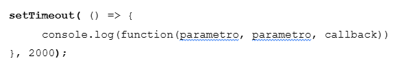

Clase 01
17 / 03
Aplicación Web Progresiva (PWA)
Página web que se comporta como una app de celular.
Puede instalarse en computadora o celular, sin pasar por tiendas (ej: Play Store)
Puede usarse sin conexión a Internet (tecnologías que guardan datos en el navegador)
Notificaciones push, como en una app nativa (aplicación creada para un sistema operativo, como Android o iOS.)
Asincronismo
- Asíncrono:
Tareas que no esperan para ejecutarse. Se mandan y el resultado llega después.
Ejemplo: Pedir una pizza y seguir viendo la tele mientras la cocinan. - Síncrono:
Tareas que se hacen una detrás de otra. Esperan a que termine una para empezar otra.
Ejemplo: Hacer fila en un banco. - Hilo thread para Javascript:
permite realizar programación multihilos
permite ejecutar varias tareas de forma concurrente dentro de un mismo programa - ⛔ Bloqueante:
Una tarea bloqueante detiene todo hasta que termina
Cuando llegan los datos, se manejan con un callback o promesa.Ejemplo: cargar una imagen y no podes hacer nada hasta que se temrine de cargar. - NO bloqueante:
Una tarea NO bloqueante se ejecuta y sigue sin esperar.
Ejemplo: Pedir datos a una API (Application Programming Interface)
Cuando llegan los datos, se manejan con un callback o promesa.
Conceptos clave
- Paralelismo
Hacer varias tareas al mismo tiempo (en paralelo) - Concurrencia
Capacidad de un programa de manejar varias tareas a la vez aunque no se ejecuten al mismo tiempo.
"ALTERNAR entre una tarea y otra". - Event Loop (bucle de eventos)
Motor que gestiona todas las tareas asíncronas en JavaScript.
Consulta si algo terminó para ejecutar su respuesta (como una promesa o callback ).
- Callback
Función que se pasa como argumento de otra función. (setTimeout por ej)
Función que se ejecuta después de que algo termina.
Ejemplo: Cuando se descarga una imagen, se llama a una función para mostrarla. - Promesas
Función no-bloqueante y asíncrona la cual puede retornar un valor ahora, en el futuro o nunca. Es decir, pueden:- ✅ CUMPLIRSE (resolve).
- ❌ NO cumplirse, fallar (reject).
- ⏳ Estar PENDIENTE.
- Async / Await
Manera moderna y más clara de escribir código asincrónico.
Hace que el código parezca sincrónico pero sea asincrónico.
Casi todas las acciones de entrada/salida (pedir datos, cargar imágenes, leer archivos, etc.) en JavaScript son asíncronas y no bloqueantes. Esto permite que la app no se frene mientras espera respuestas externas.
SetTimeout sintaxis
API (Application Programming Interface)
La API conecta. Se le pide algo y da una respuesta.
- Conecta aplicaciones, sitios entre sí.
- Se piden y envian datos de un lugar a otro
- Abstracción usando funciones o servicios sin saber como estan hechos por dentro.
Tipos de APIs

AJAX (Asynchronous JavaScript and XML)
Tecnología que permite enviar y recibir datos desde un navegador web y un servidor en segundo plano, SIN NECESIDAD DE RECARGAR LA PÁGINA.
Ofrece una experiencia más fluida y dinámica para el usuario.
XMLHttpRequest()
Objeto de JS para hacer peticiones HTTP asíncronas desde un navegador web.
Hoy en día también se utiliza para hacer peticiones a diversos tipos de recursos, no sólo XML.